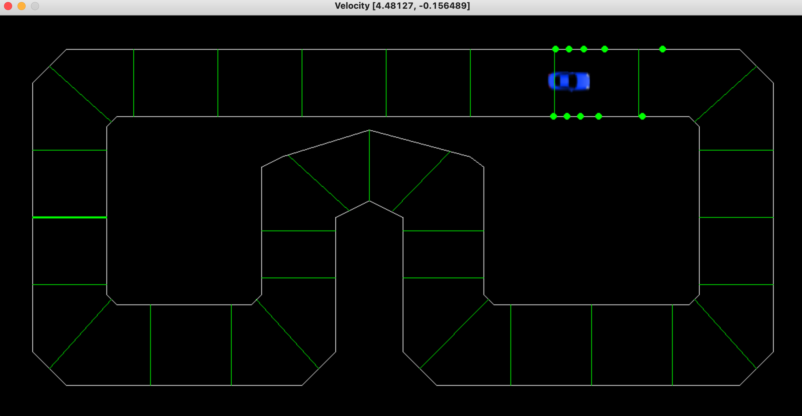

Pronet Corporations
Pronet Corporations
PAMOS-Beta + Pronet Computer
Custom Computer and Operation System

This is a bootstrap operating system for a bare bone computer I created called the Pronet Computer. All the features for the Pronet computer, includes three LED Control Slots, System information, contrast control, a graphics test for the display and access to an Arduino Nano via the operating system. Simple to access these components via the LCD menu display and its 6 control buttons. For security authentication we have provided a Pronet Security Chip that should be plugged in the board in between the power module and the Arduino Mega 2560 with the small dot faced in the bottom left hand corner, along with the first uppermost pin to the right being already connected to the 220 Ohm Resistor. Along with an easy to use customizable power module with voltage regulators with support 3.3V and 5V outputs.
PAMOS GithubPronet Self Driving Car
Autonomous Car in Pygame with no ML/AI Module
The Pronet Self Driving car is the worlds first autonmous veichle code written in Python3 and uses no machine learning or artifical intelligence modules such as numpy or tensorflow. It can easily navigate obstacales and tough situations with ease, and along with the algoritm we have provided a pygame module based simulator.
Pronet Self Driving Car Github